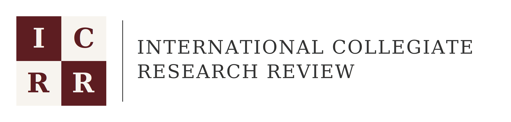

{{ n.date }}{{ n.tag }}
{{ n.title }}
{{ n.body }}
{{ n.ctaLabel }}
Calls for papers close {{ deadline }}.
icrrjournal@gmail.com
An independent, open-access journal publishing undergraduate and graduate research across five sections. Submissions are open for our first issue.
Every submission is assessed by at least two subject-specialist reviewers.
Free to read and free to publish. Authors retain copyright under CC BY 4.0.
Five sections and one review board, so interdisciplinary work has somewhere to go.
{{ d.blurb }}
{{ s.body }}
“Student research deserves the same editorial care as any other scholarship. Not a lower bar, just a fairer door.”
ICRR exists because early-career researchers produce serious work that rarely finds a home. We review it properly, edit it carefully, and publish it where it can be cited.
More about the journalSubmissions for Issue 1 close {{ deadline }}. Manuscripts of 3,000–8,000 words in any of the five sections.
The International Collegiate Research Review publishes peer-reviewed research by undergraduate and graduate students, from any institution and any country, at no cost to authors or readers.
We consider original research, systematic reviews, replication studies, and case analyses. Work is judged on its question, its method, and the honesty of its conclusions, not on the seniority of its author. Interdisciplinary submissions are welcome.
All submissions undergo double-blind review by at least two reviewers. Author identities are removed before assessment, and reviewer identities are not disclosed.
We follow COPE principles on authorship, plagiarism, data integrity, and corrections. Authors declare all funding, supervision, and use of generative tools; ethical approval is required for research involving human subjects.
No submission charges and no processing charges. Authors retain copyright under CC BY 4.0, and every article is issued a persistent identifier and a PDF of record.
Inaugural issue · Publishing {{ expected }}, then at the end of each month
No articles have been published yet. The full table of contents, with abstracts and PDFs, appears here when Issue 1 publishes on {{ expected }}.
{{ t.body }}
A preview of the listing, shown with placeholder entries.
Every issue remains permanently available and free to read. Nothing is paywalled or withdrawn.
Publishing {{ expected }}. Submissions open until {{ deadline }}.
Issue status30 October 2026
Published at the end of each month
Every published author gets a permanent profile listing their affiliation, research interests, and work published with ICRR.
Accepted authors receive a citable article of record and a permanent, ORCID-linked profile they can point to in applications.
{{ author.role }} · {{ author.affiliation }}
{{ author.location }}
{{ author.bio }}
A small team runs ICRR: editorial, technical, and communications. The section editorships are being appointed ahead of Issue 1.
{{ t.duty }}
{{ r.duty }}
We are recruiting reviewers across all five sections: graduate students, postdocs, and faculty. Two manuscripts a month, three-week turnaround.
Apply as a reviewerEditors recuse themselves from any manuscript involving their own institution, supervisor, or collaborators. Decisions rest on reviewer reports; the managing editor arbitrates only where reports conflict.
Submissions for Volume 1, Issue 1 close {{ deadline }}. There are no fees at any stage.
At least one author must be a current undergraduate or graduate student, or have graduated within the last twelve months. Faculty may appear as co-authors where they contributed substantively.
PDF or DOCX · max 20 MB · no author names in the file
{{ n.body }}
{{ n.ctaLabel }}Author Name¹, Second Author²
¹ Institution, Department · ² Institution, Department
The abstract states the research question, the method used, the principal findings, and what those findings mean for the field. It runs to no more than 250 words and avoids citations, so it can be read on its own.
Body text is set in the journal's primary serif at a comfortable measure of roughly seventy characters, so that long passages of argument remain readable on screen and in print. Paragraphs are separated by space rather than indentation.
Citations appear in the journal's house style with a numbered reference list at the end of the article. Figures and tables are numbered in sequence and captioned below.
Figure 1. Caption describing what the figure shows and where the data came from.
The method section describes the design, participants or materials, procedure, and analysis in enough detail for another researcher to repeat the study.
Results are reported without interpretation, with effect sizes and uncertainty stated alongside any test statistics.
The discussion returns to the question set out in the introduction, states what the study can and cannot support, and names its limitations plainly.